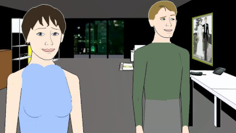

Façade

by Procedural Arts (PC, 2006)
http://www.interactivestory.net/
Façade is an art and research project which aims to extend the remit of gaming, making a bold raid deep into rarely-explored territory. It opens with a voicemail, inviting you to visit old friends, and then presents the player with a first-person view from outside your caller's apartment door.
spoilers
Stepping up briskly, I was just getting to grips with the mouse cursor's context-sensitive prompt to knock on the door, when I began to discern the muffled but unmistakable sounds of an argument going on inside. The familiar sinking feeling invoked as you screw up your courage, overcome your hesitation, and knock regardless, is possibly a gaming first.
Awkward social situations are nothing new in other media, but the complicity engendered by interactivity and first-person immersion enhances the effect. It's a rich vein, and the ensuing interactive drama mines it deeply - starting with the knock, upon which a voice fiercely whispers "He's here already? I thought you said 8 o'clock?"
Your hosts Trip and Grace do their best to welcome you gracefully, but there's clearly tension in the air. You can speak to them at any point just by typing on the keyboard, and navigate the apartment, or mess with its fixtures, using the mouse. The story that unfolds is highly dependant on your behaviour, as Trip and Grace respond to you and to each other, using a social AI system developed specifically for this project. Consequentially, the storyline and its outcome varies massively from one replay to the next - although similar themes are often brought out somewhere along the way: the Italian holiday that no-one wants to talk about; the 'experimental' decor - a symptom of Grace's frustration with her uncreative graphic design job.
There are no goals, no score. No explicit measures of success. Judging by my few replays, the evening can end in one of a small number of ways, some of them are sad or embarrassing, others, perhaps the more elusive ones, are happy or hopeful. If the player chooses to adopt the attainment of a particular story-ending as a self-assigned goal, then that's up to them - and surely that's the very essence of what interactivity is all about.
Façade isn't without its flaws. The graphics are perfunctory - which is arguably a positive, since it's Southpark visual style steers well clear of the Valley, but will doubtless repel the superficiality of the mainstream. Similarly, the AI has a limited repertoire - it only knows how to converse around particular topics, using the words and phrases that have been recorded by voice actors. Again though, this has an upside, as the confines of the two-room apartment, its three occupants, and the prominence of their relationship problems all serve to reinforce the intensity of the situation. More pertinently though, even within these constraints the AI isn't perfect - this is a research project after all. The inevitable failure to recognise your typed input is often handled relatively gracefully, by a confused look from Trip or Grace, or an abrupt subject change, passed off as a deliberate avoidance of the topic you were broaching - a tactic that sometimes actually becomes more effective and engaging the more insistent your attempts become.
It's often-cited in the game development world that the industry is still not mature enough to know how to write a game that can make the player cry. The current state-of-the art is comparable to the crude motion-pictures of the late 19th century. Who would have believed, watching the grainy, silent flickering of Fred Ott's Sneeze, the narrative and emotional finesse to which that medium would one day soar? For all its faults, it's in increments such as Façade that gaming moves in the same direction.
Rating: 9/10. Lets. Push. Things. Forward.